猎人
| 金装 | 图标 | 定位 | 理由一 | 理由二 | 理由三 |
|---|---|---|---|---|---|
| 快速装弹松身裤 | 输出 高难 清怪 | 驱逐引擎+裁决定论+混乱无序，配合充沛和面面俱到回转火刀；还有千语火粪坑的玩法，但总的来说前者更优秀 | 除了电冰分支有更好的选择，松身裤在棱镜、火、虚空、缚丝分支上都是强度顶级的配装。分为迷失信号/驱逐引擎的杀手公爵分支和庆典飞行的废墟石板/女王香炉分支 | 松身裤需要一个相对压光的环境才能发挥出他的优势，战斗人员血量足够才能有效地回转技能 | |
| 命运眷顾 | 输出 清怪 高难 | 命运眷顾是高贵的额外伤害乘区金装，vog 套的出现解决了压力环境下虚空盾的持续问题，泡泡偃月的利用、虚空泰坦泡泡盾的强势都让这个金装在输出场景更加频繁地出现 | 携带双绿时最合适的机制金装，多人低压环境虚空盾被击破的频率大幅降低，提供的额外武器面板和伤害都非常舒适，NPA/石板/数据盘虚空相关的神器进一步提高了其强度。带有护甲模组感应护盾的情况下，处于生命恢复状态/恢复/拾取能量球回血（碎裂能量球/治疗能量球）时终结会有概率直接回满蓝盾。 | 绑定 vog4 使命琢面虚空箭使用，最大化武器伤害 | |
| 星界夜鹰 | 输出 秒大怪 | 金枪头是猎人最常使用的脱手大金装，并且得益于金枪狙的强势 | 在不携带金枪头时金枪被视为变身大，拥有三倍的回转速度，典型的使用案例：solo 梦魇根源老一使用跳舞机+赫沃斯托夫刷大招，每只折磨者都能攒出金枪换上金枪头秒杀 | ||
| 光辉跳舞机 | 清怪 | 光辉跳舞机是猎人最强大的顶级机制金装，常见于单绿的使用场景，单人、多人、首日、日常都有他的身影出现，搭配焕光闪身飞升绿人为团队提供优秀的辅助 | |||
| 曲腹蛛之灵 | 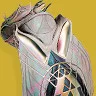 | 高难 | 常见的搭配有：至纯光能/觅敌者/加拉诺/复兴/龙影，常驻的 45% 减伤就是最简单粗暴的强度。至纯光能是最常规的选择；觅敌者用作虚空伤害特化；加拉诺对虚空箭、冰镐、电刀脱手大最多恢复 50%，金枪、丝线打击变身大最多恢复 30%，通常与虚空箭配合效果最佳；复兴是依靠圣贤王冠光剑配装回转的专属；龙影在某些不方便填装的情况下填装裁决定论等喷子 | ||
| 加拉诺碎片 | 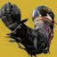 | 输出 | 加拉诺火刀是目前伤害最高的脱手大，结束时还会返还一半的大招能量，搭配松身裤或噬星者之鳞 vog 套可以快速转出下一个大招，强大且常用的输出选择 | ||
| 忠诚面具 | 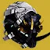 | 高难 清怪 跑图 | 优秀的控场、清怪和自回转能力，造出的冰块会吸引战斗人员仇恨，是棱镜/冰影分支非常强力的金装 | 同上 | 造地形、超级跳/触发利刃专注 |
| 巴克里斯面具 | 高难 割草 | 药剂神器风寒+冰冷伺候的组合实现了不依靠击杀的自回转闪身，满层 buff 提供对电冰武器以及狼王的 33% 额外乘区增伤加上冰影 debuff 目标的 10% 能够获得夸张的 46% 额外乘区，在裁决定论/末日先知混乱无序如此强势的版本吃到不少红利 | 电弧导体故我在是经典搭配，也有死亡信使、线圈等等玩法，一些速通场合下也会使用 | ||
| 天赋信念 | 高难 清怪 | 最适合电猎的机制日常金装；对棱镜猎来说如果只是正常使用是不如曲腹蛛之灵的，但他有个额外优势，那就是持刀飞升时释放的小球是算作刀剑伤害的，对此有多种有趣的应用：狼毒叠加纳米充能层数、光剑冲击核心施加 debuff（如烈日施加被视为光剑伤害的灼烧从而不断触发圣贤套技能回转），触发 886 的起源特性给予大量技能能量的同时触发切割能量球，噩兆的冷冻钢铁，毒鲉的燃烧野心尖锐收割。 | 升龙电猎过机制使用 | ||
| 踢踏 5 | 跑图 | ||||
| 雷电通流 | 输出 高难 | 电猎配合 NPA 雷霆反击（30%）使用，近身输出非常优秀的伤害变身大；利用风寒获得冰霜护甲后切到护盾粉碎神器（50%）拥有更高的上限，但是操作比较复杂 | 需要相当程度技术基础的高难电猎解法之一，搭配维王者之剑能够单通终极征服炽天使 | ||
| 忍野的誓言 | 高难 | 优秀自洽的金装机制，拯救了电猎的高难玩法，使用庆典飞行等高频叠加电光充能的武器搭配废墟石板能够做到无限投掷弹跳雷，电光充能的无限获取也解决了近战技能的回转问题。与松身裤类似，需要战斗人员有一定的血量才能实现良好的技能回转 | |||
| 噬星者之鳞 | 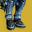 | 输出 | 吃能量球提供额外超能能量，搭配加拉诺 vog4 一轮狼毒纳米突袭就可以转出一个火刀，顶级的刀剑输出玩法 | ||
| 奥菲斯钻机 | 输出 | 仅限搭配需求层级的输出选择 | |||
| 幸运裤 | 高难 输出 | 无爱爱莲娜搭配废墟石板/双增伤野兽国度搭配杀手公爵依旧有合格的表现，爱莲娜的破盾点燃能够吃到幸运裤增伤 | 无礼言论电弧复合能达到 5000+DPS 水平，可以用于打完重弹补输出 | ||
| 失重引力子 | 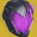 | 单人隐身 高难 | 虚空猎隐身步伐+捕猎者伏击可以轻松实现无限隐身，烟雾弹改版后棱镜也能实现无限隐身，虚空猎过机制可用，也常用于沙漠飞龙爬塔 | 高难搭配心影拥有不错的表现 | |
| 觅敌者 矛隼/曲腹蛛/虫骸 | 清怪 高难 | 常搭配废墟石板裂波者切割完美逆行使用，不稳定神枪手回转职业技能是核心神器。如果需要携带金重弹也有很多其他优秀副手虚空武器可以选择，有多种星象组合选择，如果不携带潇洒行刑官需要依靠烟雾弹隐身触发矛隼 | 同上，高难除了裂波者也有速度指挥可以选择，脱手不断触发不稳定非常有趣 | ||
| 守蛾人裹手 | 清怪 高难 | 不祥之兆特殊联动，改版后也不会挤占掉原本的手雷，建议搭配药剂包神器使用，虽然本身弹药生成够高但是每盒弹药总伤较低，需要注意弹药经济管理 | 同上，致盲+虚空覆盖护盾能够提供优秀的生存能力，电飞蛾的索敌有小问题是减分项 | ||
| 复兴 噬星者 | 输出 | 冰霜护甲触发护盾粉碎搭配丝线打击能够达到 5000+的 DPS 水平；原版噬星者满层时提供的覆盖护盾也能触发护盾粉碎，但综合来说没有复兴的泛用性 | |||
| 矛隼胸甲 | 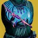 | 清怪 | 搭配神器不稳定神枪手对虚空猎来说是优秀的走机制金装 | ||
| 盘蛇苞片 | 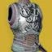 | 清怪 | 近战增伤非常慷慨，多一层充能降低容错，是火猎优秀的机制与割草金装，可搭配雪上喷使用 | ||
| 幼年阿罕卡拉之脊 | 割草还不错，面对单个怪需要依靠圣贤 2 补充部分回转才能实现无缝丢技能，搭配药剂包挽歌勉强可以下高难 | ||||
| 封印阿罕卡拉护手 | 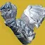 | 适合没有焕光并且近战有击杀和回转能力的分支使用，比如电、冰、缚丝，会有一些小众场景下的使用 | |||
| 冰霜-EE5 | 有减伤也有技能回转，需要一直跑是他最大的问题，速通/超级跳回转技能有时会使用 | ||||
| 傻瓜雷达 | Rush | 对 30% 以下血量的战斗人员根据血量呈线性的所有伤害 10%-30% 增伤，曾在第一次 solo 见证者 Rush 中使用，如今这种极端环境比较少；多在 PVP 出现 | |||
| 力量平衡 | 力量平衡能让自己打爆的线织幽灵产出线虫，可以通过缚丝猎大招诱捕猛击、棱镜猎金枪无限飞升产出大量分身，搭配神器集群战术打爆分身产出大量线虫，伤害意外的不错但是有点整蛊 | ||||
| 全知之眼 | 全队隐身 | 常用于玻璃拱顶迷宫，虽然改版后有不错的团队辅助效果但没有太多上场空间 | |||
| 凯布利之刺 | 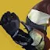 | 每次击杀虚弱的战斗人员会释放一个短暂的烟雾弹，但是这个烟雾弹不被视为近战，不存在冷却 CD，给予的近战回转可观，搭配潇洒行刑官+鼓舞（吃球回近战）可以刚好回转上鬼灵激涌。与一些自带易伤的武器搭配不错（杀手之牙/叛贼/心影/奇点利刃潇洒行刑官光剑等） | |||
| 卡利班之手 | 割草 | 最终版本增加的灼烧技能回转几乎不用担心断近战，割草爆爆爆的感觉还是很解压的职业金卡利班合成的玩法也不错 | |||
| 特里同之罪 | 适合搭配 NPA 维王者（或其他偃月）升龙电猎使用；冰猎寒冬之啮废墟 4 可以赖着不死，依靠碎冰双倍增伤出伤，但是不吃碎冰双倍而且对偃月近战有减伤非常刮 | ||||
| 投弹手 | 虚空 10 秒压制和电弧 10 秒致盲都很不错 | ||||
| 摩伊拉 | 贪婪 4 螺旋丸的伤害非常优秀，没有生存压力时可用 | ||||
| 复兴之握 | 在门徒 dayone 迎来了他的高光时刻，此后一蹶不振，如今他的作用是贡献了职业金 | ||||
| 刺客风帽 | 搭配烈日火刀扇和升龙电猎勉强能玩，然而他们都有更好的金装选择 | ||||
| 虫骸头冠 | 以辅助队友为主的金装，叠满层需要大量烈日击杀，对技能的增伤也很有限，职业金版本甚至不要求烈日击杀，依赖职业技能回转；看起来很美好但是由于发挥出实力的条件过于苛刻实战没有那么理想 | ||||
| 骗徒的握手 | 近战改版加算后由于近战拳击基础数值太低，基本不会使用 | ||||
| 雷兽的挽具 | 搭配铁旗套在怪堆中一次可以把大招将近回满 | ||||
| 幸运覆盆子 | 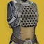 | 碍于电光雷的伤害只能成为割草金装，最好搭配伏特子弹武器使用 | |||
| 鬼神胸甲 | 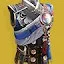 | 每次脱离隐身时会在脚底释放一个短暂的烟雾弹，被视为近战所以也能触发焕光和战壕炮管等等，常与潇洒行刑官搭配，然而由于存在内部冷却让本就可有可无的效果“雪上加霜”。对鬼刀只有击杀回复能量条的作用，更偏向 PVP | |||
| 阿斯瑞思之拥 | PVP | ||||
| 巨龙之影 | PVP | ||||
| 守誓者 | 在最终版本加强之后还是碍于弓箭的孱弱没有太多使用空间 | ||||
| 机工诡诈臂袖 | 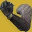 | 曾经有最终警告左键锁定右键点射 15 发的极限猴戏输出玩法，触发增伤条件过于苛刻，并且在双倍增伤 bug 修复后伤害跟不上。现在基本没有使用场景 | |||
| 曲腹蛛的伪装 | 他的最大作用是贡献了职业金 | ||||
| 觅敌者 | 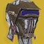 | 他的最大作用是贡献了职业金 | |||
| 凋零游侠 | 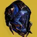 | 反弹沙漠尾王激光很帅 | |||
| 第六郊狼 | 多一层闪身和产球，仅此而已 | ||||
| 双子座小丑 | PVP 偶尔会有人玩 |
术士
| 金装 | 图标 | 定位 | 理由一 | 理由二 | 理由三 |
|---|---|---|---|---|---|
| 汇编器战靴 | 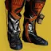 | 输出辅助 清怪 | 术士最重要的团本辅助金装，提供 35% 的焕光系增伤，几乎所有的队伍中都需要一个汇编器的角色 | 给予的奶阵回转和大范围队友支援相当优秀 | |
| 逃逸艺术家 | 输出 清怪 高难 | 逃逸手是术士最万金油的顶级金装，电炮台搭配上火炮台和线虫不依靠武器就能提供不俗的伤害，是在进行单人内容或者队伍中已经有火中术士后的不二之选 | 逃逸手的星象选择多样，通常以火炮台线虫的的拉满伤害和冰炮台吞噬的控场生存为代表，前者需要支配的吃球回雷或者预言 4 补足手雷回转。各个炮台的协助清怪能力非常强，常驻增幅也是加分项，几乎不用考虑生存问题 | 正如前文所言，逃逸手是非常优秀的枪架子，技能占了伤害的一半，几乎适配任何武器选择，作为术士高难最顶级的选择之一 | |
| 狡诈严冬 | 输出 高难 | 狡诈严冬的使用需要建立在一定的游戏基础上，它代表着术士甚至是命运 2 的上限，使用火歌星界之火能够实现单人 1.7w 的 DPS 水平，如何操作可自行查询这里不再赘述，我只想强调一些误区：星界之火是纯粹的近战，无需叠加超能属性，又因为火歌会提供 100 的近战手雷职业属性，所以只需要让近战达到 100 即可，近战是不存在点燃倍率这一说法的，所以带火炮台没有任何问题；由于存在某些代码问题，只需要站在奶阵中就可以吃到护盾粉碎，注意这跟奶阵的蓝盾没有任何关系，即使蓝盾被打掉增伤依旧存在。触发护盾粉碎的方式还有神器风寒和泡泡偃月 | 在高难中基本搭配棱镜闪电激涌星象使用，每一个战斗人员都是叠层资源，需要合理利用规划，经常适用的神器有：数据盘/药剂包/石板，数据盘经常携带吞噬星象和堡垒追求极限的推图时间，但因为缺乏减伤很考验机师的操作水平；药剂包则依靠冰粪坑冰霜护甲兜底，第二个星象可随意选择；石板则依靠编织者的线虫获得织造铠甲。叠层有一些小技巧：终结技的判定时间比终结技的动画还要略长一些，在终结技的判定时间内释放的任何伤害击杀都会被视作终结技击杀，比如神器弱化波、违抗琢面、被终结战斗人员身上释放的拆解射弹，在终结技结束后秒接巴掌击杀可以再叠 3 层；目前已知的 27 赛季终结技方阵爆破、凯旋纪念的一击制胜、曙光节溅射惊喜在动画结束后的判定时间要更长，能够做到秒接技能和武器叠层。 | ||
| 邪冬的头盔 | 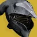 | 长时间易伤 输出 | 邪冬头板凳终结技能够实现远距离上长时间易伤，搭配一些续易伤手段经常出现在 lowman 环境。 | 邪冬头的输出案例是非常优秀的伤害选择，利用邪冬头的近战上易伤机制续上推推的 30 易伤，火歌星界之火的原理用堡垒的 300% 增伤雪上代替，让推推位在给予队友焕光和生存能力的同时打出与队友相同甚至更高的输出，输出过程仍然有很多细节需要注意，适合多人环境下不方便叠层的情况使用 | |
| 血红炼金术 | 输出 | 站在裂痕中血红炼金术不仅会给予对应大招属性的 4 层激涌，还有最主要的对标记目标造成所有伤害的 10% 额外乘区，可以依此实现不同属性武器双/三切输出；让回旋喝彩这种双属性武器吃满激涌；如果属性对应则可以带满武器洗礼而不是激涌，单人 solo/队伍中已经有汇编腿术士时适合使用 | |||
| 卡恩斯坦臂章 | 机制生存 | 吸血手在近战/终结技击杀后给予长达 8 秒的恢复 1/恢复 2 提供的生存能力非常夸张，对除棱镜以外的分支来说是非常优秀的走机制金装，常与偃月配合使用 | |||
| 黎明副歌 | 输出 高难 | 黎明副歌可以翻倍所有点燃的伤害（光剑除外），这使得点燃占伤害一部分的武器得到了显著的伤害提升，最典型的比如千语、狼毒、纯五度故我在，多人情况下仍然需要确保队伍中已经有汇编腿的情况下使用。分离老二的最优解，无限点燃可以轻松拿下锁具 | 翻倍点燃伤害、依据点燃、灼烧提供可观的近战技能回转，神器烈日爆发实际上隐性的第二次点燃会提供翻倍的技能能量从而实现接近无限响指，常见的玩法有火术蝎狮、棱镜纯五度故我在。对大招黎明的增强只是附赠品 | ||
| 风暴舞者之拥 | 输出 高难 | 作为变身系电大招在对群的同时还拥有优秀 DPS，搭配 NPA 雷霆反击传导宇宙织针、（勇气琢面）使用，最典型的例子是输出晚星老二 | 光剑搭配圣贤王冠让电术和棱镜术都能搭配风暴舞者之拥有不错的体验 | ||
| 横断之步 | 跑图 | ||||
| 虚荣自负 | 输出 | 把虚荣自负放在这个位置完全是因为他给织针风暴的增幅，搭配进化丝线和集群战术是伤害最高的一批脱手大，虽然有血红炼金术之争，但是最优解是二者结合：放完大后切到血红炼金术。缚丝术上升丝线搭配双增伤光芒复仇是游戏内的最顶级 DPS 之一，有些操作门槛，会在一些追求极限 DPS 的场合出现 | 虚荣自负在高难环境下强度一般，由于他的反屏障效果并不是机制反屏障，所以受压光影响严重。在 50 光环境下需要三枚织针才能打破屏障；他的最大作用是击杀标记战斗人员释放悬吊，标记需要近战回转，这意味着必须绑定棱镜超凡。在面对时相当于白板金装 | ||
| 地磁安定靴 | 输出 清怪 | 优秀的电术输出大招，可以依靠击杀快速回转大招，在分离老二能够一穿四锁具，但黎明副歌无限点燃的打法更轻松简单 | |||
| 雄鹿 晚星 | 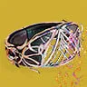 | 光剑 | 光剑圣贤 2 的强力职业金组合选择，搭配编织者之唤可以频繁释放减伤奶阵，晚星冲击波辅助火歌回转 | ||
| 霜袍服装 | 高难 | 霜袍是对于冰术而言最好的金装，可用集体爆破骑士之火释放大量炮台，也有靠混乱无序出伤的打法，使用预言套则要搭配死亡信使，涅索斯是更为保守稳妥的选择，更推荐冰霜脉冲星象回转裂痕，冰川收获在冰分支改版后并不是必须的选择 | |||
| 噬星者之灵 | 输出 | 经常搭配的有坏死/神话/至纯光能，冰大/火歌奶阵护盾粉碎推推都能达到 5000 左右的 DPS，但实用性低于火歌星界之火；而虚空大和缚丝大的伤害略低于对应的加强金装。所以在最终版本没有太多出场空间 | |||
| 至纯光能 合成感受器 | 督军手飞蛾的下位替代 | ||||
| 星云之歌 | 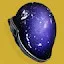 | 提供的虚空虚弱伊卡洛斯和瞬移不稳定非常完美地契合了石板的邪恶收割和不稳定神枪手，建议搭配速度指挥/土味涡流故我在/杀手之牙/裂波者等强力虚空武器，频繁使用俯冲召唤线虫施加切割获取织造铠甲，搭配面面俱到等也可以快速回转大招，是非常有趣的技能流金装，唯一的缺点是要适应瞬移的手感 | |||
| 纪念碑面具 | 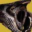 | 输出辅助 | 在批发弹药的今天，墓碑头的的主要作用不再是为队友产子弹，而是保证神性圈不断，但随着神性使用率降低出场机会也变少了 | ||
| 月之阵营靴 | 输出 | 月鞋火中是“释放时判定”的效果，所以可以在放完火中后切到汇编腿仍然保留月鞋的效果，但是考虑到收益大部分玩家不会愿意增加自己的操作复杂度，月鞋如今鲜有出场了 | |||
| 辐径晚星 | 高难 | 辐径晚星搭配贪婪 4 给予的致盲和奶阵回转是电术少数可以在高难生存下来的选择，与药剂师神器很搭配 | |||
| 蔷薇束缚 | 旧神之子增加压制的最大受益者，除了以外的怪只要被旧神之子拴住基本上失去了作战能力，非常优质的控场，个人比较推荐使用强能阵版本的吸血，强能阵本身也会给可观的三技能回转和额外弹药效率，与邪恶收割相性很好 | ||||
| 亡灵之握 | 经常搭配忧愁系列武器使用，与库尔之影的联动令人影响深刻，枯骨鳞片和荆棘清怪手感也还不错 | ||||
| 战斗和谐护肩 | 割草、大招回转 | 和谐护肩搭配元素超充器、苍白之心原始特性，铁旗 4 套装等等可以快速回转大招，给予除动能外全属性激涌还不错，就是时间略短了；谐振军火的伤害是个添头，无法吃到任何增伤。 | |||
| 先知之视 | 彪悍高难 | 先知头不再追踪满血友军后变得非常难用，回转也存在问题，但是却完美适配了彪悍环境 | |||
| 雄鹿 | 搭配纯火属性分支圣贤 2 光剑不错，其他搭配裂痕回转存在问题 | ||||
| 风暴头冠 | 割草 | 优秀的电术割草配装。给予的电弧技能回转、离子哨兵附赠的风暴雷、增加雷霆万钧的使用时间都很舒服 | |||
| 堕落者日星 | 割草 | 搭配光耀 4 回转技能非常解压，贪婪 4 由于是加算在技能回转和辅助队友层面略逊一筹 | |||
| 真理之容 | 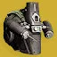 | 输出 割草 | 真理之容在输出上的典型且唯一的例子是电浆雷骑士之火 solo 大师看护人 | 除了提升手雷伤害，真理之容还可以提升被视为手雷的炮台伤害，电术搭配骑士之火的玩法依旧不错 | |
| 神化面纱 | 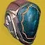 | 输出 | 尽管有黏附冲击神器对黏雷的加持，但是常规 DPS 比一些顶级的输出武器选择略逊一筹，目前唯一的使用场景是电术 solo 大师看护人 | ||
| 反转之握 | 反转之握的强度一般，必须依靠武器承担大半伤害，散射雷出伤快、伤害适中、回能量适中；涡流雷出伤很慢、伤害较低、但是因为在有一定血量的战斗人员环境可以触发两次回雷，技能经济是比较优秀的，而且不能小觑涡流雷聚怪给与的控场生存能力，也适合配合区域拒止混乱无序等爆炸武器出伤；手持超新星有最高伤害，但是回复的技能能量很少，而且要承担贴脸的风险；量子雷对单伤害最低，但是清怪还不错。 | ||||
| 奈扎雷克原罪 | 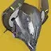 | 割草 | 优秀的虚空术士割草金装，建议与灵魂虹吸、旧神之子、强能阵搭配 | ||
| 炎阳护腕 | 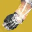 | 技能回转改动的受害者之一，一次只能转 4 颗雷，割草还是不错的 | |||
| 锇素手套 | 锇素手搭配冰焰飞弹展现出了极其强大的控场能力，但是极其缺少伤害输出，依赖武器 | ||||
| 星火协议 | 跑图 | 用的最多的是超级跳触发两次炽热升腾；正常使用可以搭配预言 4、黏附冲击等等，不依靠击杀回转的手雷能量不太够看 | |||
| 凤凰法则 | 能与铁旗 4、苍白之心、元素超充器等搭配实现无限火中 | ||||
| 巴利道斯织怒工 | 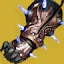 | 高难 | 巴利道斯对大招的实际增伤只有 20%，冰霜脉冲自身也带 5 层冰霜护甲，对个人的作用极其有限，不应该在单人活动中使用。最大的价值是在多人场景下给予队友冰霜护甲的辅助（注：冰大右键碎冰有大头的右键伤害和小头的右键碎冰伤害，150% 碎裂伤害是指提升小头的碎冰伤害） | ||
| 火焰润雨 | 现在基本不会使用火焰润羽三切猴戏输出了；可以抱着 vex 揭秘者清怪 | ||||
| 阿罕卡拉之颅 | 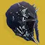 | 矛的释放需要合适的时机，判定没有那么严格，吃满伤害与猎人金枪同水平，比六层噬星略高，但是由于需要两次大招释放动画而且容易遮挡队友视野很少有使用场景。搭配铁旗 4 砸怪堆可以快速回转大招 | |||
| 虚无镣铐 | 非必要的虚弱让虚无镣铐从极其解压的割草金装，沦落为只能清理几只怪的、有回转问题的金装 | ||||
| 炫火 | 虽然增强后不需要精准击杀触发，爆炸范围还是不够理想，缚丝切割可以联动神器崩解，虚空虚弱可以联动神器邪恶收割 | ||||
| 冥火之刺 | 看起来很酷的机制却华而不实，汇编腿是他的全方面上位还不需要击杀 | ||||
| 仁心 | 仁心用于远程刮痧点燃还不错，但是现在黎明副歌是他的全方面上位 | ||||
| 恐惧弥漫 | 要求裂痕回转，如果悬吊的战斗人员不够多回血量也不够可观，并没有解决缚丝术缺少软减的问题，棱镜有更多优秀的金装选择。悬吊 dot 伤害有夸张的超能回转效率，然而缚丝脱手大也比较幽默，如果他能和虚荣自负合二为一将是设计优秀的金装 | ||||
| 毒蛇面貌 | 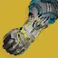 | PVP | |||
| 神圣黎明之翼 | 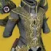 | 在空中瞄准时会给予像增幅那样的战斗人员精度下降效果，并且每次烈日武器击杀都会重新刷新恢复 buff 到最高时间，击杀填装武器效果可搭配双增伤或弹药经济武器。 | |||
| 割线纤维 | 绑定虚空大招，而吞噬对于虚空分支通过碎片就可以随意取得，击杀回转职业技能作用有限。棱镜不如选择他的纯上位职业金版本 | ||||
| 异界之眸 | PVP | ||||
| 浮游孢子 | 无意义的线虫上拆解和十秒一次的缠结产线虫，几乎没有任何作用 | ||||
| 阿罕卡拉之爪 | 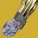 | 多一层近战和产球，仅此而已 |
泰坦
| 金装 | 图标 | 定位 | 理由一 | 理由二 | 理由三 |
|---|---|---|---|---|---|
| 虫神爱抚 | 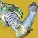 | 清怪 输出 高难 | 维王者（任意偃月）+NPA+梦根 2（压制偃月产球）搭配电/棱镜/虚空分支是非常优秀的机制金装；火小锤+（地窖 2+灭火 2/se2）/（涅索斯 4）+神器风寒冰粪坑的组合即使在宗师也有一战之力 | 虫手小锤是目前唯一拥有优秀 DPS 的近战技能输出，对熟悉游戏的玩家而言是非常顶级的单人输出手段 | 虫手好耶/虫手偃月好耶/火小锤+神器风寒冰粪坑在有叠层环境的宗师中拥有不错的表现 |
| 没有 B 计划 | 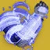 | 输出 高难 | 泰坦的单人输出最佳金装，有电泰坦的聚合+换档/战壕裁决定论；也有虚空泰坦的全明星动能合成完美悖论/威胁等级 | 高难通常与杀手之牙搭配使用，骑士之火打雷电泰坦或者棱镜泰坦都是可行的选择 | |
| 陨星胸甲 | 输出 | 泰坦唯一最好用的脱手大增强金装，含金量自不用多说，抵抗 4 和大招回转都是锦上添花 | |||
| 难以逾越的颅骨堡垒 | 清怪 | 雷霆一击的 80% 减伤、优秀伤害、以及配合重击的回血能力让他成为泰坦最优秀的机制金装之一 | |||
| 合成感受器 | 高难 | 冰泰坦专用金装，搭配贪婪 4 成为三职业高难速通天花板的存在 | |||
| 圣火护心甲 | 输出 | 小锤 6000DPS、大锤 8000DPS，要注意需要一直点击左键并且按住方向键才能吸住 | |||
| 游隼胫甲 | 清怪 | 虽然游隼腿在近战加算后在宗师没有太多发挥空间，但是在 raid/地牢内容中能够快速清理的优势让他成为泰坦最优秀的机制金装之一 | |||
| 永恒战士 噬星者 | 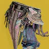 | 输出 | 搭配三板斧真相使用 | ||
| 据点 | 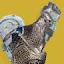 | 高难 | 吃到光剑红利的金装，泰坦的任何分支搭配圣贤 2 据点都能在高难本有一战之力，建议使用棱镜/缚丝/虚空分支 | ||
| 中止之跃 | 高难 | 中止之跃类似于泰坦版本的曲腹蛛，在勇士之鞭增加了回转之后多用在泰坦的一些枪械玩法上。典型例子比如光剑 | |||
| 和平守护者 | 高难 清怪 | 药剂包的驱逐引擎混乱无序超前玩法 | 搭配高弹药生成且有优秀伤害的越橘、泰拉巴玩法 | ||
| 猖獗雄狮 | 跑图 | 泰坦优秀的跑图金装，搭配刀剑可以无限跳跃 | |||
| 白霜/中止 号角 | 高难 | 圣贤王冠的光剑玩法 | |||
| 第二次机会 | 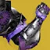 | 单人输出 | 泰坦单人的输出金装，存在 bug 在超凡状态下的近战无法施加易伤，需要依靠切换职业技能退出超凡形态，普通玩家一般不会用到 | 圣盾投掷产出的虚空裂口不存在 CD，可以配合冰冷伺候使用，反屏障效果与虚荣自负一样会受压光影响，-50 光需要两盾才能破 | |
| 危险推力 | 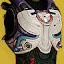 | 输出 | 会使用的两种情况①搭配不稳定神枪手回转小盾争取导弹的伤害而并非武器增伤；②真相短轴爆发。是这是因为增伤时间太短只有 10 秒，小盾的回转至少要 20 秒；而且需要精准伤害叠层，这与爆炸武器的玩法不符（火箭脉冲除外）。 | ||
| 珍贵伤痕 | 清怪 | 对应大招属性武器击杀可以为自己与盟友提供短暂的恢复 1，朴实优秀的效果，可用作机制金装；棱镜可用职业金版本 | |||
| 乔木典狱官 | 高难 | vog4 的最大收益者，被动提供的 1.45 倍职业技能回复效果是电泰坦的优质选择，虽然三个小盾并不会叠加电光充能层数，但是小盾的仇恨吸引、阻挡四面八方的射弹、致盲贴脸的战斗人员给的生存能力超乎你的想象 | |||
| 医疗设备 | 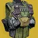 | 输出 | 自带一个没有冷却 cd 的爆破专家，让他在输出领域有自己的一席之地（如：集体爆破筒子），击杀也有 10 手雷能量回转。如果其他职业的两兄弟也能拥有类似改动就好了 | ||
| 毁灭之牙肩甲 | 输出/大招回转 | 哨兵圣盾输出指定金装，在周围有小怪的情况下可以依靠飞盾延长举盾时间；过机制时使用虚空充能近战击杀回转 20% 超能能量相当可观，可以与蒙特卡洛、拳击手/集体拳击的虚空武器搭配解决近战回转问题 | |||
| 英勇礼服 | 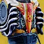 | 跑图 | 英勇礼服无法继承先前的速度挺可惜，不过可以补足剩下不够的距离，电弧导体故我在的玩法非常有趣。英勇礼服的撞击是近战，能吃到堡垒重击等增伤 | ||
| 阿尔法·鲁皮之脊 | 释放小盾时的爆发治疗不错，给予的职业技能回转能解决小盾衔接问题；释放后 2 秒冷却 3 秒计数的 30 点回血根本微不足道；没有太多使用用途，本质还是小盾减伤吸引仇恨足够强力 | ||||
| 卡德马斯山脊长矛帽 | 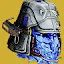 | 高频冰武器伤害可以快速产冰矛，并且随着冰霜护甲层数提高冰矛伤害，跟风寒冰区域拒止很相配；存在 bug，在释放铸造者右键瞬间捡起冰矛可以让铸造者获得冰矛的增伤造成大量伤害（该伤害不被视作武器伤害，所以也不吃武器增伤）。绑定冰大招以及和钻石长矛星象共享冷却都是减分项。 | |||
| 罗蕾莱辉煌头盔 | 盾爆星象能够触发两次太阳黑子，但是可惜没法吃到太阳黑子的技能冷却提升。如果给予的还是曾经的恢复 2 那将是非常优秀的金装 | ||||
| 火风暴臂铠 | 泰坦少见的脱手大金装，但是脱手大锤的伤害跟不上如今的数值膨胀了，连火泰坦都基本不会使用它 | ||||
| 圣人 14 号的头盔 | 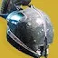 | 输出 割草 | 适合泰坦单人搭配霸道回声，为揭纱露眼一直触发填装无需换弹 | 裂波者废墟石板无限泡泡盾的割草玩法很有意思 | |
| 爆炸波行者 | 阿莱索尼姆的定制金装，适合搭配药剂包使用，风寒可以配合稳定 5 层冰霜护甲，大型爆炸冻结效果很炫酷 | ||||
| 亚克兴角战役钻机 | 清怪 | 钻机胸的自动填装和增伤都是其次，最重要的是依据层数为自动步枪/机枪提供 0-50 的弹药生成，对单人合唱/机枪的弹药经济有显著提升 | |||
| 冰瀑衣钵 | 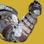 | 神器治愈能量球让他成为合成手的下位，如果玩醒神丝线丢雷冰泰坦可以解决回血问题 | |||
| 玄铠 | 他很好玩，棒鸡曾经为了他给小锤增加了 0-36% 乘算的随距离变化增伤 | ||||
| 苍白苏醒 | 2 火力无限+支配+恢复能量球+炽热余烬+贪婪 4+醒神丝线，每五秒扔一次雷就能实现击杀一个也是无限融合雷，可以搭配死亡信使使用。 | ||||
| 点接触炮架 | 强度取决于帧数，只推荐 300 以上的玩家使用（使用雷霆一击时：按帧率额外返还近战技能能量。帧率对应：30 帧 = 10%｜60 帧 = 18%｜120 帧 = 32%｜144 帧 = 41%｜300 帧 ≈ 77%） | ||||
| 无知希冀 | 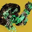 | 在有搏击手词条时他也很好玩，常态回转和伤害都成问题 | |||
| 至纯光能护心甲 | 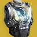 | 在 buff 改到 5 秒后一蹶不振，玩冰泰坦扔雷还挺有意思 | |||
| 断绝末路 | 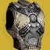 | 断绝末路高难乏力，低难又有些小题大作，中等难度的压光环境是他的舒适区 | |||
| 凯布利角盔 | 火泰坦光剑能玩，可惜点燃是最低倍率，他的职业金版本或许更加优秀 | ||||
| 独眼面具 | PVP，PVE 也不是不能玩 | ||||
| 永恒战士 | PVP，PVE 也不是不能玩 | ||||
| 沙丘行者 | PVP | ||||
| 凤巢 | 非常团队的金装，理论强度取决于队友抱团程度，但他实际并没有太多使用 | ||||
| 白霜-Z | 风暴怒吼改版前对冰泰坦是不错的金装，但是现在他的最大作用是贡献了职业金版本 | ||||
| 沉默者面具 | PVP，棱镜能拿吞噬但是没那么有用 | ||||
| ACD/0 反馈栅 | PVP | ||||
| 燃烧舞步之道 | 跟术士的黎明副歌一对比就显得什么都不剩了 | ||||
| 大熊狂怒 | 坚不可摧自身的回转已经足够，哨兵圣盾举盾也有毁灭之牙这种更优秀的选择 | ||||
| 西坦壁垒 | PVP | ||||
| Mk.44 让开 | 不觉得带着队友一起冲锋很有救赎感吗 | ||||
| 安泰俄斯护盾 | 不应该使用 | ||||
| 永劫系列 | 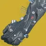 | 在弹药批发的今天永劫手几乎很少使用了 |